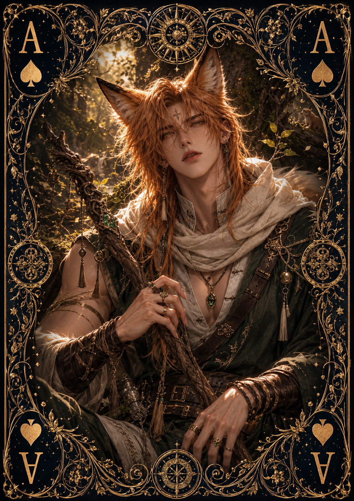

| Race | Foxkin |
| Gender | Male |
| Age | 27 Years |
| Nation | Zythar Ruins |
| Weapon | Wooden Longbow |
| Magic | None |
Faelor is a skilled hunter from Zythar and the leader of the Fox Brigade, a group entrusted with protecting the nation's vast grasslands and the settlements surrounding them. Rather than relying on magic, he has developed exceptional skill with a traditional wooden longbow and possesses an intimate knowledge of the wilderness he protects.
Intelligent, observant, and physically capable, Faelor is particularly talented at noticing changes in his surroundings. His duties often involve tracking dangerous creatures, guiding travelers through isolated regions, and responding to threats before they can reach populated areas. Despite his position as a leader, he remains approachable and works closely alongside the other members of his brigade.
Faelor possesses no remarkable magical abilities and is considered relatively harmless outside combat. His effectiveness comes from accuracy, agility, survival skills, and years of experience as a hunter. He prefers avoiding unnecessary confrontation, but when the grasslands or their inhabitants are threatened, his bow is rarely far from his hands.
He also maintains a close relationship with King Aethan, who trusts Faelor and the Fox Brigade with the protection of some of Zythar's most extensive territories. Their friendship has never made Faelor particularly interested in royal life, however. He is far more comfortable beneath an open sky with a bow in his hands than surrounded by the wealth of the royal court.